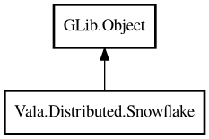

Snowflake
Object Hierarchy:

Description:
public class Snowflake : Object
64-bit Snowflake ID generator.
ID format: - 41 bits: timestamp (milliseconds since custom epoch) - 10 bits: node ID - 12 bits: sequence within same millisecond
Content:
Creation methods:
Methods:
- public int64 nextId ()
Generates next Snowflake ID.
- public string nextString ()
Generates next Snowflake ID as string.
- public int nodeIdOf (int64 id)
Extracts node ID component.
- public SnowflakeParts parse (int64 id)
Parses Snowflake ID into components.
- public int sequenceOf (int64 id)
Extracts sequence component.
- public int64 timestampMillis (int64 id)
Extracts timestamp component in milliseconds.
- public Snowflake withEpoch (DateTime epoch)
Sets custom epoch.
Inherited Members:
All known members inherited from class GLib.Object
- @get
- @new
- @ref
- @set
- add_toggle_ref
- add_weak_pointer
- bind_property
- connect
- constructed
- disconnect
- dispose
- dup_data
- dup_qdata
- force_floating
- freeze_notify
- get_class
- get_data
- get_property
- get_qdata
- get_type
- getv
- interface_find_property
- interface_install_property
- interface_list_properties
- is_floating
- new_valist
- new_with_properties
- newv
- notify
- notify_property
- ref_count
- ref_sink
- remove_toggle_ref
- remove_weak_pointer
- replace_data
- replace_qdata
- set_data
- set_data_full
- set_property
- set_qdata
- set_qdata_full
- set_valist
- setv
- steal_data
- steal_qdata
- thaw_notify
- unref
- watch_closure
- weak_ref
- weak_unref